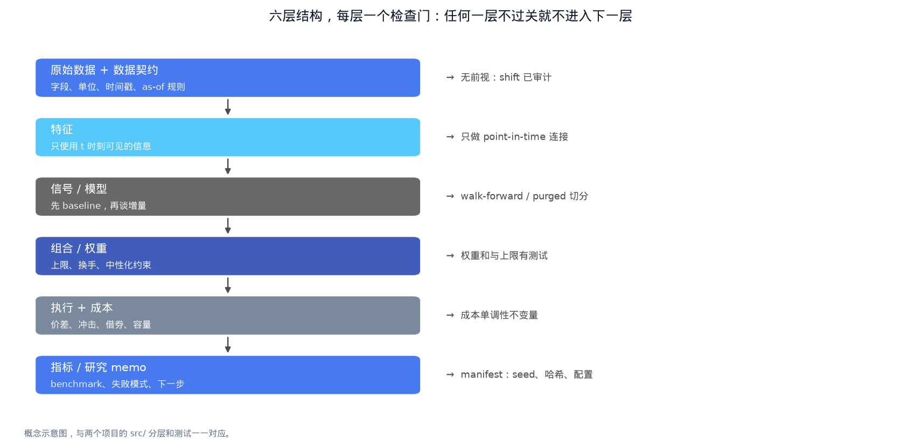
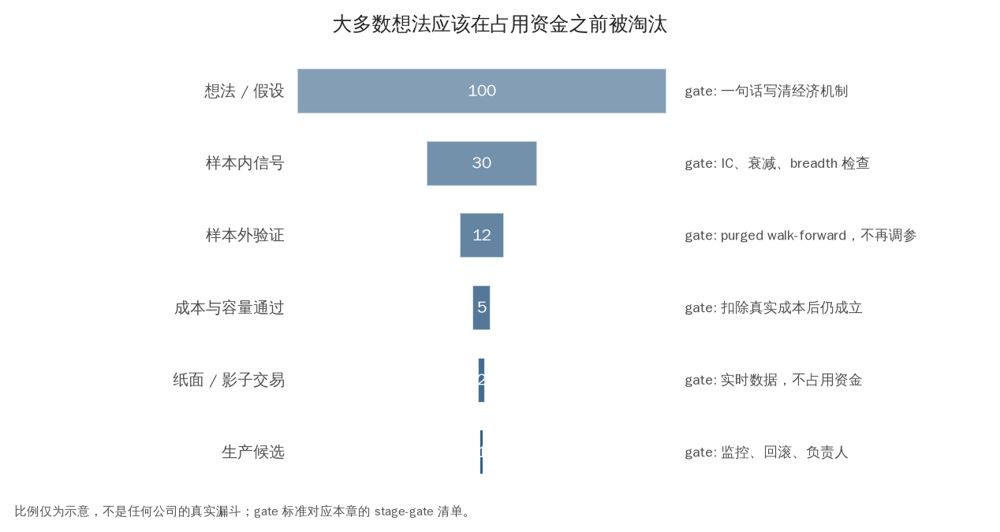

第九章：全链路项目、岗位能力与面试表达（End-to-End Research and Interview）¶
面试官想知道的不是你能背多少金融名词，而是你能否把一个问题拆开、写出假设、避免泄漏、建立 baseline、量化风险、解释失败并清楚沟通。本章把前八章串成一条可执行的研究流程，并对应到两天一个项目的训练方式。
0. 学习目标¶
完成本章后，你应当能够：
- 用一张图描述从数据到交易、监控和复盘的全链路；
- 在两天内完成一个小而完整的 alpha 或 ML/text research；
- 用 research memo 讲清楚问题、方法、结果、风险和下一步；
- 区分 QR、QT、QD、market making、systematic trading 和 fundamental quant 岗位的关注点；
- 为 Citadel Securities、Jane Street、HRT、Optiver、Jump、QRT、Tower、IMC、Two Sigma、Cubist/Point72、DE Shaw、Millennium、DRW、SIG、Virtu、Akuna、DV Trading 等岗位准备有证据的项目表达；
- 建立面试中的概率、统计、编程、市场和 research case 复盘清单。
1. 全链路 Pipeline 总览¶
1.1 从问题到部署候选¶
Research question
-> economic hypothesis
-> universe + point-in-time data
-> feature/label construction
-> baseline
-> model/signal
-> portfolio construction
-> execution + cost
-> backtest and stress
-> out-of-sample/walk-forward
-> research memo + review
-> paper/live shadow
-> limited production
-> monitoring, attribution, retraining and retirement
每个箭头都可能引入错误。策略不是“模型 + equity curve”，而是研究、组合、执行、风险和运营的联合系统。

图 9-1｜五层结构，每层一个检查门。 从数据契约到研究 memo 共五层，每层右侧是进入下一层前必须通过的检查：无前视、point-in-time、walk-forward/purged、权重约束测试、成本单调性、可复现 manifest。任何一层不过关就不进入下一层。数据类型：概念示意图，与两个项目的 src/ 分层和测试一一对应。
1.2 五个必须回答的时间问题¶
对每一笔历史交易，问：
- 当时我知道哪些数据？
- 信号何时生成？
- 订单何时发送？
- 什么价格和数量实际成交？
- PnL、风险和成本何时被记录？
回答不了其中任何一个，回测结果就不完整。
2. 研究问题模板¶
用下面格式写一页 proposal：
Hypothesis：在 [资产宇宙] 中，[信息/机制] 可能使 [特征] 预测 [未来期限] 的 [标签]，因为 [经济解释]。若信号稳定且成本后仍有空间，它可能改善 [benchmark]，但在 [失败状态] 中失效。
随后固定：
- universe 和进入/退出规则；
- data availability 和时区；
- label、horizon、shift；
- baseline 与 primary metric；
- 交易延迟、成本、容量和风险约束；
- train/validation/test；
- 继续/停止的门槛。
3. 项目 A：跨资产 Alpha/Trend Research（两天）¶
项目 A 是一个偏 QR/系统化研究的全链路练习，资产混合股票/债券代理、商品、FX 或加密的教学数据，默认使用确定性合成数据，重点是管线而非押注某个真实行情。
Day A1：数据、信号和最小回测¶
上午：读懂对象与数据
- 阅读第一至第四章相关段落；
- 打开
projects/alpha_research/src/data.py，写出每列的 data dictionary； - 画四个资产的价格、收益、波动和缺失；
- 检查日期顺序、重复、负价格、缺失和单位；
- 写一句 hypothesis：趋势是否能在成本前解释未来收益？
下午：实现 baseline 和 signal
- 阅读
features.py的 rolling return、rolling volatility 和 inverse-vol weight； - 实现/验证
position.shift(1)的交易延迟； - 跑
python -m src.run； - 用 equal-weight、buy-and-hold 或 zero-signal 作为 baseline；
- 输出 gross/net equity curve、年化收益、波动、Sharpe、最大回撤、换手。
A1 交付物
- 一页 data dictionary；
- 一张 signal/position/equity 图；
- 一张 baseline 对比表；
- 200 字说明“为什么这个回测没有偷看未来”。
Day A2：鲁棒性、成本和研究 memo¶
上午：压力测试和归因
- 比较 trend window 20/60/120；
- 比较 0/10/50 bps 成本；
- 比较 equal-weight、inverse-vol 和 volatility-target；
- 分资产、分年度和高/低波动状态报告；
- 计算 gross、net、beta/方向暴露和 turnover；
- 找出收益最大贡献资产和最差状态。
下午：写 memo 和面试演练
- 填
reports/memo_template.md； - 结论必须写结果、证据、限制和下一步；
- 回答：“趋势为什么可能存在？”“成本加倍还成立吗？”“这是 alpha 还是风险暴露？”；
- 跑
tests/run_tests.py，确认数据、特征、回测和指标可复现。
A2 交付物
reports/alpha_research.md；- 参数/成本/窗口敏感性表；
- 一段 90 秒口头项目介绍；
- 三个失败模式和各自的后续实验。
4. 项目 B：ML + LLM Text Research（两天）¶
项目 B 先用 mean baseline 和 numpy Ridge，再用 lexical text feature，最后选择性加入本地 embedding。它训练的是“从结构化/文本特征到未来收益”的研究流程，不是声称生产级语言模型。
Day B1：ML baseline 和时间验证¶
上午：标签与特征审计
- 阅读第三、第四、第七章；
- 打开
data.py，写出每条文本的发布时间和目标日期； - 确认 features 在 t、labels 在 t+1/horizon；
- 跑 mean baseline，记录 MSE、rank IC 和分时期表现；
- 设计一个随机切分为什么错误的反例。
下午：Ridge 和 ablation
- 阅读
models.py的标准化、Ridge 和 fit/predict； - 比较 market-only、lexical-only、combined；
- 固定训练/验证顺序，记录 \(\lambda\) 敏感性；
- 删除一个特征组做 ablation；
- 不要先追求更高模型复杂度，先解释每个系数和结果。
B1 交付物
- 特征/标签时间图；
- baseline ladder 表；
- 训练/验证/测试结果；
- 200 字说明模型是否真正改善了交易决策。
Day B2：语义层、LLM 审计和研究 memo¶
上午：可选 semantic branch
- 阅读第八章；
- 若本地有
transformers和许可清晰的模型，运行--semantic； - 若依赖/模型不可用，保留清楚的 error，不用随机替代；
- 比较 lexical 与 embedding 的预测、rank IC、延迟和特征稳定性；
- 抽样检查 embedding/事件是否使用了发布日期之后的信息。
下午：文本研究 memo
- 记录模型版本、prompt/embedding 配置、输入 hash 和输出；
- 填写 precision/recall、证据片段、unknown 和失败样本；
- 比较加入文本后的增量结果与成本后结果；
- 写出部署前必须增加的数据、审计和风险控制。
B2 交付物
reports/ml_llm_research.md；- lexical/semantic ablation 表；
- 三条实际失败样本和修复建议；
- 一段 90 秒项目介绍，明确“模型做什么、没有做什么”。
5. Research Memo 的推荐结构¶
5.1 Problem¶
一两句话定义可交易问题和经济动机，避免“使用 ML 找 alpha”这种空话。
5.2 Data and timing¶
资产宇宙、字段、来源、时间范围、时区、可见时点、缺失和修订。若是合成数据，明确它只是工程测试。
5.3 Method¶
公式、窗口、特征、标签、模型、仓位、成本、风险限制和执行假设。所有自由度列出来。
5.4 Baselines and evaluation¶
说明 baseline 为什么合理，并同时报告 prediction、portfolio、cost、risk、stability。
5.5 Results and diagnosis¶
回答：结果是否样本外？哪些资产/时期贡献？成本/延迟加倍后怎样？是否只是 beta/carry/volatility exposure？
5.6 Limitations and next steps¶
把没有做的事情写成具体实验：真实 point-in-time 数据、退市、借券、微观结构、更多资产、纸面交易、事件去重、人工标签等。
5.7 Decision¶
给出继续、缩小、暂停或停止。停止一个没有鲁棒性的假设也是研究成果。
6. 不同岗位看同一个项目什么不同¶
Quantitative Research（QR）¶
关注 hypothesis、统计设计、特征/标签、样本外、因子暴露、鲁棒性和研究速度。面试中要能解释为什么选择 baseline、如何发现泄漏、如何从失败中设计下一实验。
Quantitative Trading（QT）¶
关注信号衰减、市场状态、仓位、执行、PnL attribution、实时异常和风险。要能回答“信号在 10 分钟内衰减怎么办”“成交一半时下一步是什么”。
Quantitative Developer（QD）¶
关注数据模型、回测正确性、延迟、并发、监控、测试、部署和故障恢复。要能指出如何保证数据/订单幂等、如何回放历史、如何处理时钟和断线。
Market Making¶
关注 bid/ask、库存、订单流、逆向选择、队列、报价更新、对冲和 kill switch。项目中应突出 execution/PnL attribution，而不是只展示中长期 Sharpe。
Systematic Trading / Portfolio Research¶
关注因子、资产配置、风险预算、容量、成本、benchmark 和组合稳定性。项目 A 的趋势、逆波动和成本压力测试比较贴近这类表达。
Fundamental Quant / Event Research¶
关注公司/事件定义、财务数据质量、披露时间、预测修订和与基本面的解释。项目 B 的文本时间线和结构化事件可作为起点。
7. 目标公司面试准备的共同核心¶
不同公司的题目风格和岗位细节会变化，但量化 research/trading 实习通常共同考察：
- Probability：条件概率、Bayes、期望、方差、分布、随机过程直觉；
- Statistics：估计、置信区间、回归、相关性、假设检验、过拟合；
- Mental math：比例、近似、期望值、赔率和快速数量级判断；
- Programming：Python/C++ 基础、数据结构、复杂度、调试和向量化；
- Markets：订单、spread、风险、期货/期权、套利与执行；
- Research case：给数据/情景，提出假设、实验、指标和风险；
- Communication：把不确定性、假设和失败讲清楚。
Jane Street、Citadel Securities、HRT、Optiver、Jump、IMC、DRW、SIG、Akuna、Virtu 等交易/做市导向岗位，常更重概率、市场机制、快速决策和编程；Two Sigma、QRT、Cubist/Point72、DE Shaw、AQR、Man AHL 等研究/系统化导向岗位，常更重统计、ML、因子、数据和研究设计。实际团队差异很大，申请时以当年职位描述和面试反馈为准，不要把公司标签当成固定规则。
8. 项目口述模板（90 秒）¶
按照以下顺序：
- Question：我研究的是……，因为……；
- Data/timing：使用……，特征在 t 可见，预测 t+1……；
- Baseline：先比较……，避免把复杂模型提升误认为信号；
- Method：信号/模型/仓位/成本是……；
- Result：样本外……，成本从……到……，主要贡献来自……；
- Risk：最大限制是……，可能是……暴露；
- Next step：下一步验证……，而不是盲目调参。
被追问时，用“假设—证据—限制—下一步”回答。不要把任何指标说成证明；说清楚它支持了什么、没有支持什么。
9. 两周后的巩固计划¶
完成两天项目后，剩余时间可以按循环巩固：
- 每天 30 分钟概率/统计手算；
- 每天 30 分钟 Python/SQL/数据结构；
- 每天 30 分钟阅读一家目标公司的公开教育/研究内容；
- 每天 60–90 分钟改进一个项目实验或 memo；
- 每天 30 分钟口头解释一个术语和一个失败案例；
- 每两天做一次完整 mock case：从问题、数据、验证到交易决策。
学习记录必须保存错题、误区、代码 bug 和新的检查，而不是只记录看过多少页。
10. 面试前 Checklist¶
知识¶
- 能解释 asset、return、volatility、drawdown、Sharpe、beta、alpha、spread、slippage、turnover、capacity；
- 能比较 stock、bond、FX、futures、options、ETF 和 crypto；
- 能手算 Bayes、期望、方差、组合风险、简单回归；
- 能解释 trend、momentum、value、carry、mean reversion 和 market making；
- 能说出 look-ahead、survivorship、selection、label leakage 和 multiple testing。
研究¶
- 有两个两天内完成的端到端项目；
- 每个项目有 baseline、样本外、成本、风险和失败样本；
- 能画 signal → position → order → fill → PnL；
- 能指出至少三个真实部署前还缺的组件；
- 能在 90 秒和 5 分钟两个版本介绍项目。
编程¶
- 能用 pandas/numpy 完成 rolling、shift、groupby、rank、merge、缺失处理；
- 能写测试检查未来信息、边界日期、空输入和重复键；
- 能解释时间复杂度、向量化和内存；
- 能调试一个错误的回测并定位数据/时间/单位问题。
沟通¶
- 每个结论都有对应证据和限制；
- 不把相关性说成因果，不把回测说成生产收益；
- 被质疑时能修改假设而不是防御一个数字；
- 能说出最可能失败的情景和监控办法。
11. 常见误解与误区¶
- “把项目做得越大越有说服力。” 两个小而可审计的全链路项目，通常胜过一个无法解释的复杂模型。
- “展示最高 Sharpe 就够了。” 面试官会追问成本、暴露、样本外和失败状态。
- “背公司风格比理解研究重要。” 职位和团队会变化，底层概率、统计、代码和市场直觉更可迁移。
- “项目只要结果好，不必写限制。” 能识别限制和下一步是研究成熟度的证据。
- “ML/LLM 项目越新越加分。” 如果没有 baseline、时间审计和成本后评估，新模型只增加叙事风险。
12. 最终自测¶
- 从一个模糊想法开始，写出完整 hypothesis、universe、feature、label、horizon、decision rule 和 benchmark。
- 画出项目 A 的 signal、position、order、fill、PnL 时间线，并指出一个可能的前视偏差。
- 解释项目 B 为什么先做 lexical baseline，再做 embedding/LLM。
- 面试官说“你的结果可能只是股票 beta”，请提出检验、回归和中性化方案。
- 如果成本从 10 bps 升到 50 bps 后策略消失，你会停止项目还是继续？给出基于证据的决策规则。
- 用 90 秒讲一个你做错的研究实验、如何发现错误、修复后结论怎样变化。
生产化视角的研究交付清单¶
一个成熟研究项目的交付物不是 notebook 和一张收益曲线，而是可以由另一位研究员复核的最小包：
- problem statement：假设、机制、universe、horizon、benchmark 和 primary metric；
- data contract：字段字典、主键、单位、时区、发布时间、版本与许可；
- experiment config：seed、窗口、切分、成本、限额和模型参数；
- artifacts：原始/清洗数据 hash、特征快照、预测、订单、成交、PnL 和日志；
- validation：不变量测试、时间泄漏测试、压力情景、样本外结果和失败样本；
- decision memo：结论、证据边界、风险、容量、监控和下一步，不把合成实验包装成生产策略。
项目 A 和项目 B 已把这些对象压缩成可读的 src/、tests/、outputs/ 和 reports/。完成 milestone 时，学习者负责提出假设、运行实验、写观察；agent/代码助手负责解释现有接口、指出不变量、帮助定位 bug 和审阅时间对齐，不能替学习者选择一个“看起来最好”的结果。
两个项目的最终验收¶
- 项目 A：至少比较两个信号/窗口、四种成本、等权 benchmark，报告 gross/net、换手、回撤、暴露和失败阶段；
- 项目 B：至少比较 mean、market-only、lexical、semantic（若下载模型），保持同一切分与交易规则，报告 rank IC、top-bottom net、覆盖率、重复文本、模型耗时和负结论；
- 两个项目都应保存配置和运行命令，并能从干净环境重建输出；
- 口述时先讲研究问题和信息时点，再讲方法、样本外证据、风险限制，最后讲下一步。
从研究候选到生产候选的 Stage Gate¶
Man AHL 官方页面把数据采集、初始研究、模型实现和执行看成同一条技术链；Quant Wiki 的回测材料则提醒样本外、纸面交易、幸存者偏差和成本。把两者合并成面试可表达的 stage gate（阶段门）：
| Gate | 必须回答 | 通过证据 |
|---|---|---|
| G0 Hypothesis | 机制、预测对象、资产宇宙和失败条件是什么？ | 一页 research contract |
| G1 Data | 信息何时发布？修订、退市、时区、缺失怎样处理？ | schema、as-of 测试、数据 hash |
| G2 Signal | IC/单调性/decay/coverage 是否比随机基线更好？ | 按日期诊断和预先固定的主指标 |
| G3 Portfolio | 风险模型、暴露、相关性、容量和 turnover 如何控制？ | 风险贡献、相关矩阵、成本敏感性 |
| G4 Replay | arrival price、fill、spread、impact、delay 如何核算？ | gross/net/TCA/PnL attribution |
| G5 Paper/Shadow | 规则能否在新数据上无人工选择地执行？ | 逐日订单日志、未改规则的 forward 结果 |
| G6 Production candidate | 漂移、异常、回滚和责任人是什么？ | model/data lineage、监控阈值和 kill switch |
任何 gate 失败都应留下记录。研究的产物不是“通过所有 gate 的故事”，而是下一位研究员能定位失败发生在哪一层。

图 9-2｜大多数想法应该早死。 漏斗从 100 个想法逐层筛到 1 个生产候选，每个 gate 右侧写着通过证据：机制一句话、样本外验证、成本与容量、纸面交易、监控与回滚。漏斗的意义不是淘汰本身，而是让失败发生在占用资金之前。数据类型：概念示意图（比例为示意，不是任何公司的真实漏斗）。
风险约束要在模型设计阶段就确定，并随数据、信号和执行一起交付。单名、组合与独立监控的限制应分别明确；执行故障时还要预先约定降级路线、停止条件和责任人。多市场、多信号和不同时间尺度可以增加分散机会，是否增加了独立信息仍需用压力期相关性、成本和容量检验。
面试中如何把行业资料说成自己的工作流¶
不要声称复刻某公司的内部系统。可以这样回答：
我从 AQR 的跨资产 value/momentum 与 trend 研究中借鉴“先看跨市场结构、再做组合分散”的研究顺序；从 Man AHL 的公开页面借鉴把数据、风险和执行视为一条交付链；从 WorldQuant BRAIN 公开界面借鉴记录 field、delay、decay、neutralization、coverage 和 turnover；从 Quant Wiki 的回测提醒中固定 survivorship、成本、样本外和 paper test。我的项目把这些原则落成了可运行的 baseline、审计表和 deployment gate，但不会把公开网页等同于公司的内部实现。
13. 本章小结¶
量化研究是一条可审计的链：问题、数据、时间、特征、模型、组合、执行、风险、评估、监控和沟通。两周的目标不是成为生产级 quant，而是能独立完成两个小型端到端实验，并对每个结果的证据边界负责。
最好的面试答案通常不是“我找到了一个高 Sharpe 策略”，而是：“我先用什么 baseline 检查问题，怎样保证信息当时可得，结果在哪些成本和时期下成立，哪些暴露解释了收益，最可能的失败模式是什么，以及我下一步会怎样验证。”
Reference 与进阶了解¶
- MIT Sloan Business Club, Quant Bible：用于概率、统计、回归、做市和面试题复习。
- Jane Street, Puzzles、公司业务概览和官方 Blog（旧 teaching URL 已失效）：https://www.janestreet.com/puzzles/、https://www.janestreet.com/what-we-do/、https://blog.janestreet.com/。
- Citadel Securities、Hudson River Trading、Optiver、IMC、SIG、DRW、Two Sigma、QRT、AQR、Man AHL 等官方 careers/engineering/research 页面：重点阅读岗位要求、公开讲座和研究说明。
- QuantStart 的免费算法交易与回测文章：https://www.quantstart.com/articles/。
- QuantEcon lectures：概率、资产定价、计量和 Python 数值方法：https://quantecon.org/lectures/。
- CFA Institute Research & Insights：投资组合、因子、风险和职业术语：https://www.cfainstitute.org/insights。
-
进阶面试资料：Timothy Crack, Heard on the Street；Mark Joshi, Quant Job Interview Questions and Answers；但本课程优先使用公开/免费章节、课程和项目，不要求购买。
-
行业研究实践：Man AHL 官方页面 https://www.man.com/ahl、WorldQuant BRAIN 公开平台 https://platform.worldquantbrain.com/、Quant Wiki https://quant-wiki.com/start/。
可运行实验：从真实数据到一份可审计的端到端结果¶
最后把前几章的核心对象串起来：真实 S&P 500 + VIX → lagged signal → next-day position → cost → PnL → audit table。输出一张图和一张“研究合同”表，帮助你在面试中按信息时点、证据和限制讲清楚，而不是只报一个收益数字。
# Notebook setup: research/.venv + local public data
from pathlib import Path
import sys
import os
import numpy as np
import pandas as pd
import matplotlib.pyplot as plt
# Make the notebook runnable from research/lectures, research, or a parent workspace.
_here = Path.cwd().resolve()
_candidates = []
for _c in [_here, *_here.parents]:
_candidates += [_c, _c / "research", _c / "lectures", _c / "research" / "lectures"]
for _candidate in _candidates:
if (_candidate / "notebook_helpers.py").exists() and (_candidate.parent / "sources" / "external" / "data").exists():
LECTURE_DIR = _candidate
ROOT = _candidate.parent
break
else:
raise FileNotFoundError("请从 research、research/lectures 或包含 research 的工作区目录运行 notebook")
sys.path.insert(0, str(LECTURE_DIR))
from notebook_helpers import load_real_market_data, summary, annualized_sharpe, max_drawdown
FIG_DIR = LECTURE_DIR / "figures"
FIG_DIR.mkdir(parents=True, exist_ok=True)
plt.style.use("seaborn-v0_8-whitegrid")
plt.rcParams["figure.figsize"] = (11, 6)
plt.rcParams["figure.dpi"] = 110
print(f"ROOT={ROOT}")
print(f"Python={sys.executable}")
print("数据只从 sources/external/data 本地读取；要更新数据，请先保存新快照和来源说明。")
market = load_real_market_data(ROOT).loc["2010":"2025"].copy()
contract = pd.DataFrame([
["universe", "^GSPC", "public index proxy; not tradable at index close"],
["feature", "126-day momentum", "known after t close; trade from t+1"],
["label", "next-day simple return", "evaluation only; never a feature"],
["execution", "sign position, 5 bps per turnover", "illustrative cost, not TCA"],
["benchmark", "buy and hold", "same dates and label"],
], columns=["object", "definition", "audit_note"])
display(contract)
signal = market["spx_close"].pct_change(126, fill_method=None)
position = np.sign(signal).shift(1).fillna(0)
turnover = position.diff().abs().fillna(position.abs())
strategy = position * market["spx_return"].fillna(0) - turnover * .0005
benchmark = market["spx_return"].fillna(0)
result = pd.DataFrame({"strategy_net": strategy, "benchmark": benchmark}).loc["2011":]
wealth = (1 + result).cumprod()
print(pd.DataFrame({name: summary(series) for name, series in result.items()}).T.round(4))
print("information available before first held return:", signal.first_valid_index().date())
print("first nonzero position:", position[position.ne(0)].index[0].date())
fig, axes = plt.subplots(2, 1, sharex=True, figsize=(12, 8))
wealth.plot(ax=axes[0])
axes[0].set_ylabel("wealth")
axes[0].set_title("Auditable end-to-end result")
axes[1].fill_between(result.index, (wealth["strategy_net"] / wealth["strategy_net"].cummax() - 1), 0, alpha=.35, color="firebrick")
axes[1].set_ylabel("strategy drawdown")
axes[1].set_xlabel("date")
fig.tight_layout()
fig.savefig(FIG_DIR / "09_end_to_end.png", bbox_inches="tight")
plt.show()
最终复盘¶
请把 notebook 输出填入 90 秒口述：
- 我的问题和经济机制是什么？
- 哪些信息在决策时已经可得，哪些只用于 evaluation？
- baseline、benchmark、成本和样本外结果是什么？
- 收益可能被哪些 beta、选择偏差或执行假设解释？
- 下一项最能区分 competing explanations 的实验是什么？
一个小而诚实的负结果比一条没有时间审计、成本和失败分析的漂亮曲线更适合 quant research/trading 面试。